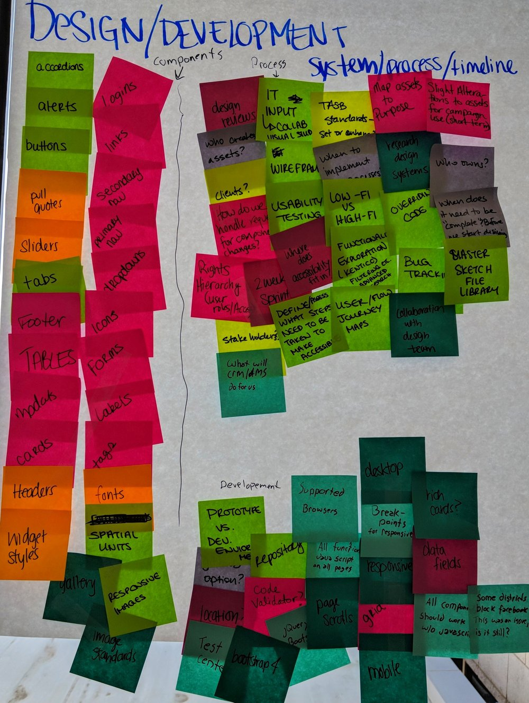
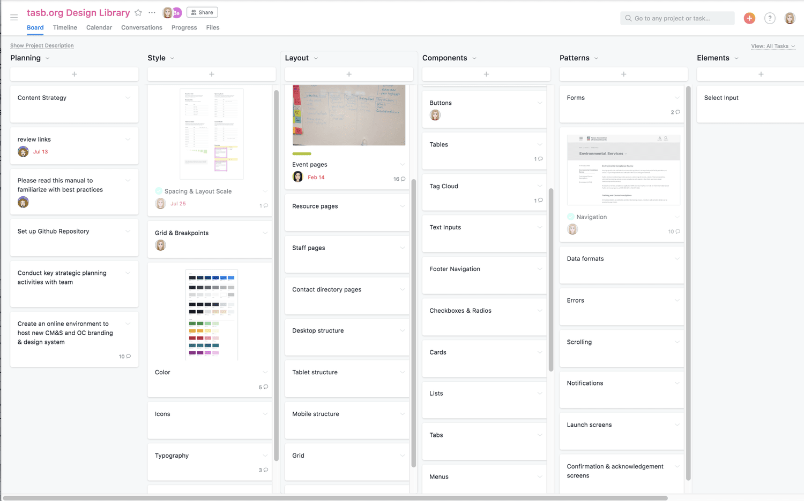
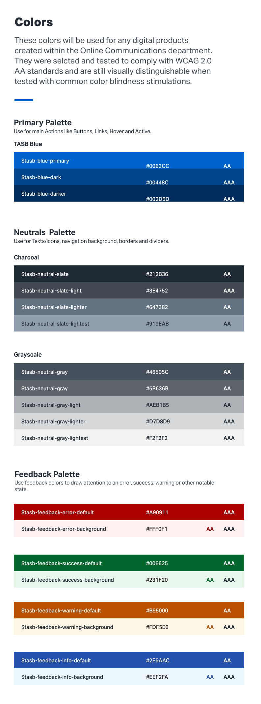
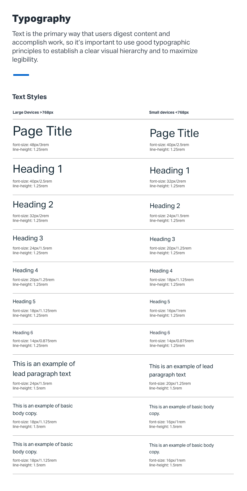
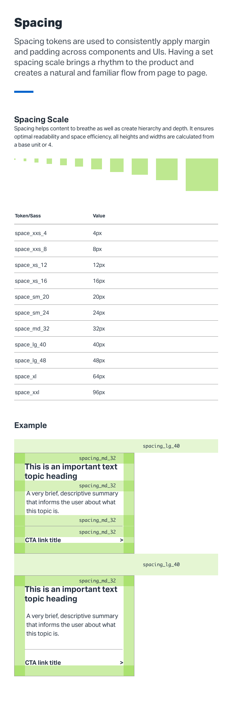
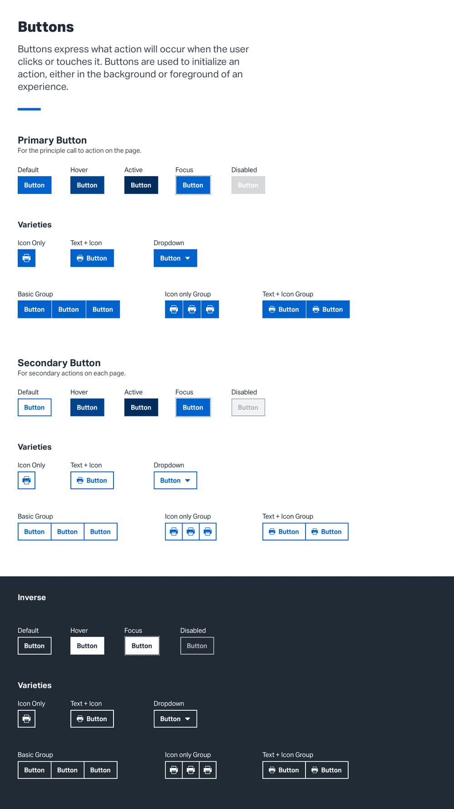
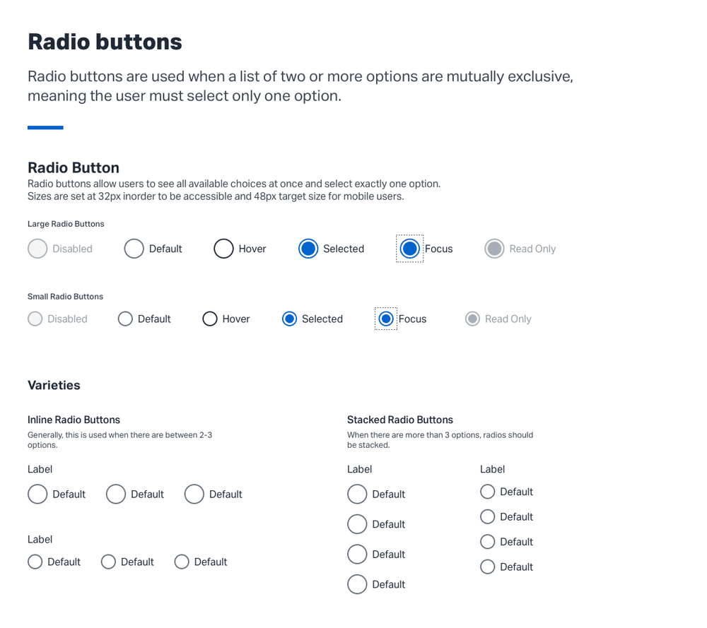
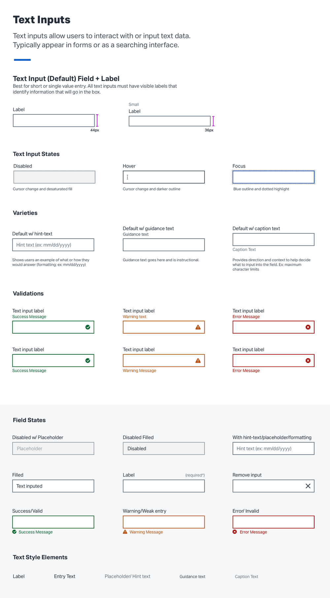
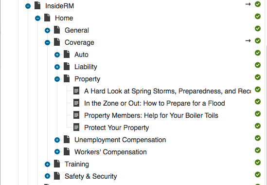
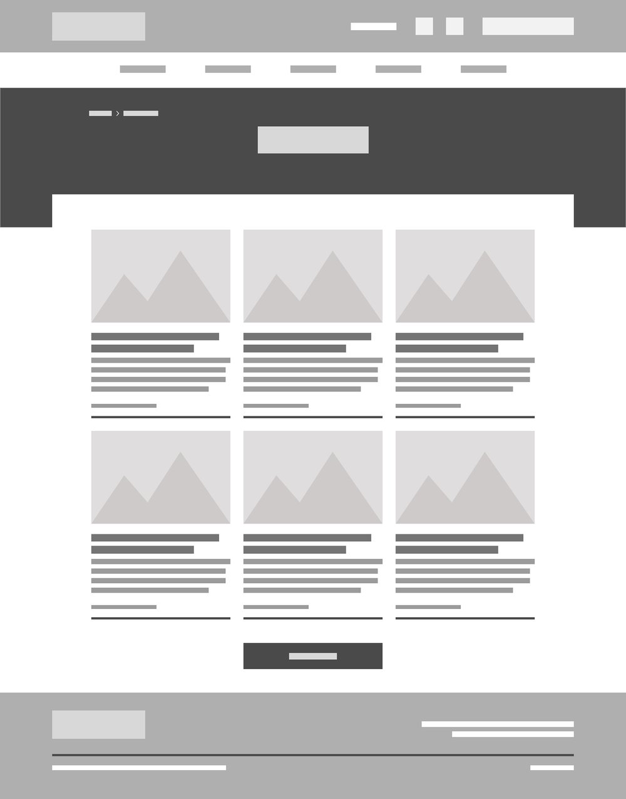

TASB Design System and the InsideRM blog
I helped TASB build a shared component library, then used it to turn the Risk Management Fund's hard-to-find newsletter into InsideRM, a blog readers use and editors can run without code.
Every page was a one-off, so nothing was easy to find.
Across TASB
Sites were designed page by page. Not everything that looked like a button worked like one.
At the Risk Management Fund
Years of useful News & Views articles sat in an archive readers couldn't search. Engagement had dropped.
First, one set of parts for every site.
I ran a workshop where the team screenshotted every component on our sites. That inventory became a roadmap, and the roadmap became a shared library with rules for how each part behaves.








From the library. Pick a sheet, then scroll inside it.
Then, the first product built with it.
RMF wanted its archive to become a resource members could actually use. I made three calls.
Categories as the structure
I used Kentico's categories to organize the blog, with broad topics that would last. Editors add a post by picking a category. No code.

Categories as the navigation
Readers wanted search, but it was out of budget. So the categories became the menu: choose Training, see only training. Breadcrumbs always lead back.
Three templates for every screen
Featured, Category and Article pages that scale from phone to desktop, with a sticky toolbar to share, email or print.
